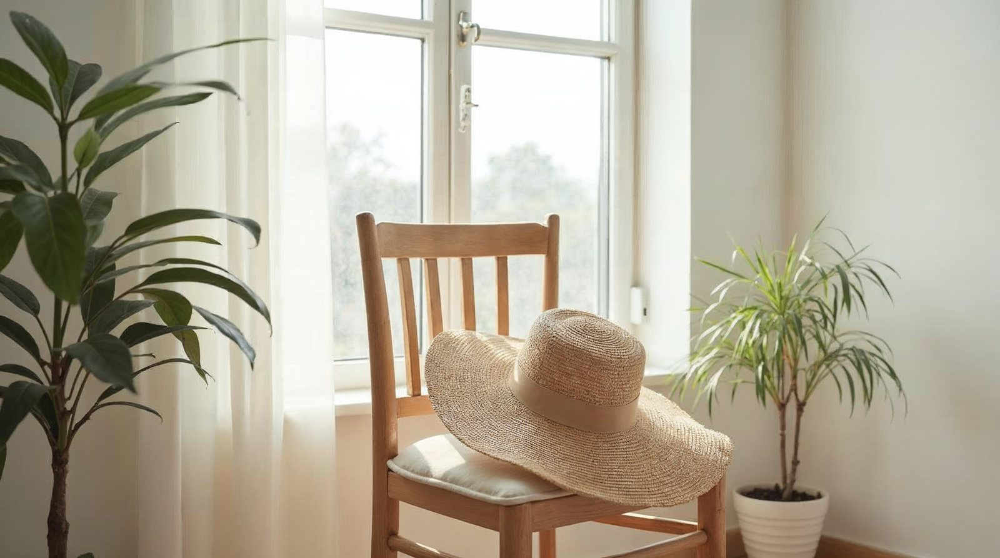
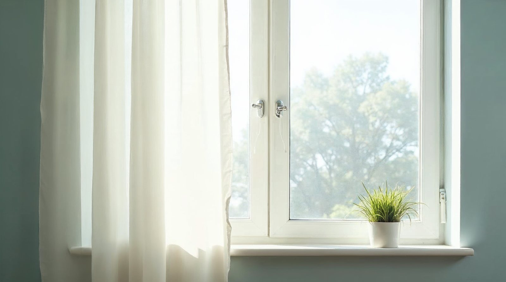
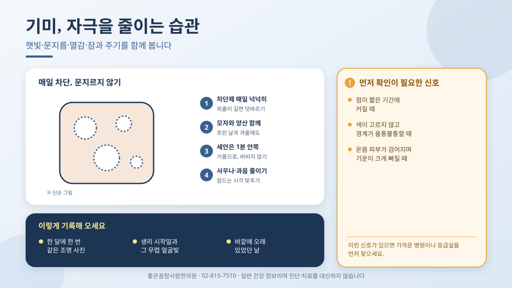

이종호 한의사 감수좋은꿈참사랑한의원 대표원장 (한의사 면허번호 19769)발행 2026-11-26 · 수정 2026-11-26
이 글의 차례
아침에 세수를 하고 거울을 보다가 광대뼈 위쪽이 유난히 거뭇해 보입니다. 피곤해서 그런가 싶어 며칠 지켜보는데, 얼룩은 사라지기는커녕 양쪽 볼에 비슷한 모양으로 자리를 잡아 갑니다. 화장으로 가려 보지만 오후가 되면 다시 비쳐 보여 신경이 쓰입니다.
진료실에서 기미 이야기를 꺼내시는 분들은 조금 조심스럽게 말씀을 시작하십니다. 피부 이야기를 한의원에서 해도 되나 싶어서요. 그런데 이야기를 나누다 보면 기미가 짙어진 시기와 잠이 줄고 생리 주기가 흔들린 시기가 겹치는 경우가 적지 않습니다.
기미는 피부 깊은 곳에서 색소를 만드는 세포가 예민해져, 필요 이상으로 색소를 만들어 내는 상태입니다. 햇빛이 가장 큰 방아쇠이고, 호르몬의 변화와 피부를 문지르는 자극, 피로와 열감이 그 위에 겹치면서 얼룩이 짙어지고 넓어집니다.
저는 기미를 볼 때 피부의 얼룩만 보지 않으려고 합니다. 얼룩이 짙어지는 흐름에는 생활이 함께 묻어 있기 때문입니다. 피부과에서 다룰 부분과 생활에서 챙길 부분을 나눠 보고, 한의원에서는 그 가운데 몸의 리듬을 함께 살핍니다.

기미는 어떤 상태인가요?
기미는 주로 광대뼈, 이마, 윗입술, 턱에 연한 갈색에서 짙은 갈색의 얼룩이 넓게 퍼지는 색소 변화입니다. 경계가 흐릿하고 지도처럼 불규칙한 모양이며, 얼굴 양쪽에 비슷한 모양으로 생기는 경우가 많습니다. 아프거나 가렵지는 않습니다.
여성에게 훨씬 흔하고, 임신 중이나 출산 뒤, 피임약을 먹는 동안, 갱년기 무렵처럼 호르몬이 크게 움직이는 시기에 생기거나 짙어지는 경향이 있습니다. 남성에게도 생기며, 야외 활동이 많은 분들에게서 자주 봅니다.
기미는 여름에 짙어지고 겨울에 조금 옅어지는 계절 흐름을 보이기도 합니다. 그래서 겨울에 괜찮아졌다고 안심하고 자외선 차단을 소홀히 하면, 봄볕이 강해지면서 다시 짙어지는 일이 되풀이됩니다.
왜 기미가 생기고 짙어질까요
피부 아래쪽에는 멜라닌이라는 색소를 만드는 세포가 있습니다. 원래 멜라닌은 햇빛으로부터 피부를 지키는 우산 같은 역할을 합니다. 그런데 이 세포가 예민해지면 작은 자극에도 색소를 과하게 만들어 얼룩으로 남깁니다.
기미를 짙게 만드는 요인은 여러 가지가 겹칩니다.
- 자외선, 그리고 창가로 들어오는 햇빛 속 가시광선
- 임신, 출산, 피임약, 갱년기처럼 호르몬이 움직이는 시기
- 세안할 때 세게 문지르거나 각질 제거를 자주 하는 습관
- 사우나, 찜질, 뜨거운 불 앞 요리처럼 얼굴에 열이 오르는 환경
- 잠이 부족하고 피로가 쌓인 생활
- 피부에 맞지 않는 화장품으로 자극이 반복될 때
특히 문지르는 습관은 생각보다 영향이 큽니다. 클렌징을 오래 하거나 마사지 기구로 얼굴을 세게 문지르면 피부가 작은 염증을 겪고, 그 자리에 색소가 더 쉽게 남습니다. 기미를 지우려고 더 열심히 문지르다가 오히려 짙어지는 경우가 있습니다.
열도 함께 봅니다. 얼굴로 열이 자주 오르는 분, 화를 참으며 지내는 분, 잠을 늦게 자는 분에게서 기미가 짙어지는 흐름을 자주 봅니다. 한의학에서는 얼굴로 몰리는 열과 몸 아래쪽의 냉기가 어긋난 흐름을 함께 살핍니다.
주근깨나 잡티, 염증 뒤 색소와는 어떻게 다를까요?
주근깨는 코와 볼에 작은 갈색 점이 흩뿌려진 듯 여러 개 생기는 것으로, 어릴 때부터 나타나고 햇빛을 받으면 진해집니다. 기미는 점이 아니라 넓은 얼룩이고, 대개 성인이 된 뒤 생긴다는 점이 다릅니다.
흔히 잡티라고 부르는 것 가운데에는 햇빛에 오래 노출되어 생긴 검버섯 같은 색소 반점이 섞여 있습니다. 경계가 비교적 뚜렷한 동그란 갈색 반점이고, 나이가 들수록 늘어납니다. 기미와 함께 있는 경우도 많아서 피부과에서 구별해 보는 것이 좋습니다.
여드름이나 상처, 화상, 습진이 지나간 자리에 갈색 자국이 남는 것은 염증 뒤 색소침착입니다. 염증이 있던 자리 모양을 따라 생기고, 시간이 지나면서 서서히 옅어지는 경우가 많습니다. 이때도 그 자리를 자꾸 만지거나 햇빛을 받으면 오래 남습니다.
이런 구분이 중요한 이유는 다루는 방법이 다르기 때문입니다. 레이저 같은 시술이 어떤 색소에는 잘 맞고, 기미에는 오히려 자극이 되어 짙어지는 경우도 있습니다. 그래서 시술을 결정하기 전에 피부과에서 정확히 구분을 받는 것이 먼저입니다.
기미가 있을 때 자주 하는 실수
첫째, 흐린 날이나 실내에서는 자외선 차단제를 바르지 않는 것입니다. 구름을 뚫고 오는 자외선도 있고, 창가로 들어오는 빛도 기미에 영향을 줍니다. 계절과 날씨에 상관없이 매일 바르는 습관이 기본입니다. 양은 생각보다 넉넉해야 합니다. 얼굴 전체에 손가락 두 마디 정도를 덜어 이마, 볼, 코, 턱에 나눠 올린 뒤 펴 바르고, 귀 앞과 목까지 챙겨 주세요.
둘째, 아침에 한 번만 바르고 하루를 보내는 것입니다. 땀과 마스크, 손으로 만지는 동안 차단제는 점점 지워집니다. 바깥에 오래 있는 날은 두세 시간마다 덧바르고, 모자와 양산을 함께 쓰시는 것이 좋습니다.
셋째, 짧은 기간에 눈에 띄는 변화를 기대하는 것입니다. 피부가 새로 바뀌는 데에만 한 달 가까이 걸리고, 기미는 여러 달에 걸쳐 천천히 변합니다. 조급한 마음에 여러 제품과 시술을 번갈아 쓰면 피부가 예민해져 오히려 짙어질 수 있습니다.

계절마다 챙길 것이 조금씩 다릅니다
봄은 햇빛이 갑자기 강해지는데 몸은 아직 겨울 습관에 머물러 있는 계절입니다. 꽃구경이나 나들이로 바깥에 있는 시간이 늘면서 기미가 한꺼번에 짙어지기 쉽습니다. 3월부터는 모자와 차단제를 여름처럼 챙기시는 것이 좋습니다.
여름에는 땀과 물놀이로 차단제가 금방 지워집니다. 물에 강한 제품을 고르고, 땀을 닦을 때는 문지르지 말고 눌러서 닦아 주세요. 휴가지에서 하루 종일 볕을 받은 뒤에는 시원한 물로 얼굴의 열을 먼저 식혀 주시면 좋습니다.
가을과 겨울에는 기미가 조금 옅어진 듯 보여 마음을 놓기 쉽습니다. 하지만 난방으로 피부가 마르고 예민해지면 작은 자극에도 색소가 남기 쉽습니다. 이 시기에는 보습을 넉넉히 하고 차단제 습관을 그대로 이어 가시는 것이 다음 봄을 위한 준비가 됩니다.
먼저 이렇게 여쭙니다
처음 오시면 저는 대략 이런 순서로 여쭙니다. 미리 생각해 오시면 이야기가 훨씬 수월해집니다.
- 얼룩이 언제부터 생겼고, 계절에 따라 짙어지고 옅어지는지요?
- 임신, 출산, 피임약, 생리 주기 변화와 시기가 겹치는지요?
- 자외선 차단제는 매일, 어떻게 바르시나요?
- 세안과 클렌징은 얼마나 오래, 어떤 도구로 하시나요?
- 잠드는 시각과 깨는 시각, 피로는 어떠신가요?
- 얼굴로 열이 오르거나 화끈거리는 일이 잦은가요?
드시는 약도 함께 확인합니다. 일부 약은 햇빛에 피부를 더 예민하게 만들 수 있어서, 약을 드시는 기간에 기미가 짙어졌다면 처방한 선생님께 여쭤보시는 것이 좋습니다. 약은 혼자 끊지 마시고 상의해서 정하셔야 합니다.
갑상선 질환을 진단받으셨거나 생리 주기가 크게 흔들리고 있다면 그 이야기도 들려주세요. 호르몬과 관련된 상태는 산부인과나 내과에서 함께 살펴야 하는 경우가 있어서, 필요하면 확인을 권해 드립니다.
일상에서 먼저 해 볼 수 있는 것
기미 관리는 색소를 덜 만들도록 자극을 줄이는 데서 시작합니다. 거창한 것보다 매일 이어 갈 수 있는 작은 습관이 오래갑니다.
- 자외선 차단제를 매일 아침 넉넉히, 외출이 길면 덧바르기
- 챙이 넓은 모자와 양산을 함께 쓰기
- 세안은 미지근한 물로 1분 안쪽, 문지르지 말고 거품으로 씻기
- 수건으로 닦을 때 비비지 말고 가볍게 눌러 물기 빼기
- 각질 제거와 마사지 기구 사용은 줄이기
- 사우나와 오래 하는 반신욕처럼 얼굴에 열이 오르는 시간 줄이기
잠도 피부와 가깝습니다. 피부는 밤사이 낮 동안 받은 자극을 정리하는데, 잠이 짧고 늦으면 그 시간이 부족해집니다. 잠드는 시각을 일정하게 맞추고, 잠들기 전 휴대폰 화면을 보는 시간을 줄이는 것부터 해 보세요.
식사에서는 채소와 과일을 고르게 드시고, 끼니를 거르지 않는 것이 기본입니다. 특정 음식 하나가 기미를 지워 준다고 기대하기보다, 몸 전체의 리듬을 고르게 하는 쪽이 피부에도 이롭습니다. 술은 얼굴로 열을 올리기 쉬우니 횟수부터 줄여 보세요. 물을 낮 동안 나눠 드시고, 짠 음식으로 붓는 날이 이어지지 않도록 저녁 국물을 조금 줄이는 것도 도움이 됩니다.
마음의 긴장도 함께 봅니다. 쫓기듯 지내며 얼굴이 자주 달아오르는 분이라면, 하루에 몇 번 어깨를 내리고 숨을 길게 내쉬는 시간을 만들어 보세요. 얼굴로 오르는 열을 가라앉히는 데 도움이 될 수 있습니다.
한의원에서 함께 살필 수 있는 경우
- 기미가 짙어진 시기와 생리 주기 변화, 출산, 갱년기가 겹치는 경우
- 얼굴로 열이 자주 오르고 손발은 차며 잠이 얕은 경우
- 피로가 쌓이고 소화가 더디며 얼굴빛이 칙칙해졌다고 느끼는 경우
- 피부과 시술을 받으면서 몸의 리듬과 열감을 함께 살피고 싶은 경우
좋은꿈참사랑한의원에 오시면 모든 분의 맥을 먼저 짚고, 얼굴빛과 얼룩의 모양을 살피며, 잠과 생리 주기, 소화, 열감을 여쭙니다. 한의학에서는 기혈의 흐름과 얼굴로 몰리는 열을 함께 봅니다.
진찰한 내용을 바탕으로 생활에서 바꿔 볼 것 하나와 함께 침, 한약 상담 가운데 지금 상태에 맞는 것을 정합니다. 한약을 상의할 때는 드시는 약을 모두 확인하고 신중하게 정합니다. 임신 중이거나 임신을 준비하신다면 먼저 알려 주시고, 산부인과 선생님과 상의한 뒤 진료 방향을 정합니다.
얼룩 자체를 옅게 하는 시술과 바르는 약은 피부과에서 상의하시도록 안내합니다. 한의원 진료는 피부과 치료를 대신하는 것이 아니라 나란히 가는 것입니다. 피부과에서 얼룩을 다루고, 한의원에서는 그 바탕에 있는 잠과 열감, 주기의 흐름을 함께 살핀다고 생각해 주시면 됩니다.
이렇게 기록해 오시면 상담이 쉬워집니다
기미는 천천히 변해서 기억에 기대면 차이를 알기 어렵습니다. 한 달에 한 번, 같은 장소와 같은 조명에서 정면과 양옆 사진을 남겨 두세요.
- 한 달에 한 번 같은 조명에서 찍은 얼굴 사진
- 바깥에 오래 있었던 날과 자외선 차단제를 덧바른 횟수
- 생리 시작일과 주기, 그 무렵 얼굴빛의 변화
- 잠든 시각과 깬 시각, 피로가 심했던 날
- 새로 쓰기 시작한 화장품이나 시술 날짜
사진과 기록을 나란히 놓고 보면, 얼룩이 짙어진 시기와 생활 사이의 연결이 보이기 시작합니다. 그 연결이 무엇을 먼저 바꿀지 정하는 실마리가 됩니다. 사진은 화장을 지운 맨얼굴로, 창을 등지지 않은 같은 자리에서 찍어야 비교가 정확합니다.
천천히, 그러나 꾸준히
기미는 하루 이틀 사이에 생긴 얼룩이 아니라, 여러 해의 햇빛과 생활이 쌓인 결과입니다. 그래서 달라지는 데에도 여러 달이 걸립니다. 조급해하지 않고 꾸준히 가는 쪽이 피부를 덜 자극하는 길입니다.
얼룩이 신경 쓰여 사람을 만나기 싫어지거나 거울 보기가 불편해지셨다면, 그 마음도 진료실에서 편하게 말씀해 주세요. 기미는 몸에 해를 끼치는 병은 아니지만, 매일 마주하는 얼굴이라 마음에 주는 무게가 큽니다. 그 무게를 덜어 가는 것도 함께 하는 일입니다.
이번 주에는 매일 아침 자외선 차단제 바르기와 세안할 때 문지르지 않기, 이 두 가지만 지켜 보세요. 다음에 오시면 사진과 기록부터 함께 펼쳐 보겠습니다.
이런 증상은 먼저 확인이 필요합니다
- 점이나 얼룩이 짧은 기간에 커지거나, 색이 고르지 않고 경계가 울퉁불퉁해지거나, 피가 나는 경우
- 얼굴뿐 아니라 온몸 피부가 이유 없이 검어지는 경우, 특히 기운이 크게 빠지거나 체중이 줄거나 어지러움이 함께 있을 때
이런 신호가 있으면 한의원보다 가까운 병원이나 응급실을 먼저 찾으세요.
함께 읽으면 좋은 글
- 얼굴이 쉽게 붉어지고 화끈거리는 안면홍조와 주사(딸기코)는 어떻게 살피나요?
- 잠이 부족하면 피부가 푸석하고 트러블이 나는 이유는 무엇인가요?
- 어른이 되어 턱과 볼에 붉고 아픈 여드름이 되풀이되는 성인 여드름은 어떻게 살피나요?
- 얼굴이 달아오르고 땀이 갑자기 날 때는 어떤 점을 살펴보나요?
- 갱년기 무렵 눈·입·피부가 부쩍 건조해졌을 때는 무엇을 살피나요?

여쭙는 것
- 얼룩이 언제부터 생겼고, 계절에 따라 짙어지고 옅어지는지요?
- 임신, 출산, 피임약, 생리 주기 변화와 시기가 겹치는지요?
- 자외선 차단제는 매일, 어떻게 바르시나요?
생활에서 해 볼 것
- 자외선 차단제를 매일 아침 넉넉히, 외출이 길면 덧바르기
- 챙이 넓은 모자와 양산을 함께 쓰기
- 세안은 미지근한 물로 1분 안쪽, 문지르지 말고 거품으로 씻기
한의원에서 함께 살필 것
- 기미가 짙어진 시기와 생리 주기 변화, 출산, 갱년기가 겹치는 경우
- 얼굴로 열이 자주 오르고 손발은 차며 잠이 얕은 경우
- 피로가 쌓이고 소화가 더디며 얼굴빛이 칙칙해졌다고 느끼는 경우
먼저 확인이 필요한 신호
- 점이나 얼룩이 짧은 기간에 커지거나, 색이 고르지 않고 경계가 울퉁불퉁해지거나, 피…
- 얼굴뿐 아니라 온몸 피부가 이유 없이 검어지는 경우, 특히 기운이 크게 빠지거나 체…
한눈에 보는 표
| 구분 | 핵심 |
|---|---|
| 여쭙는 것 | 얼룩이 언제부터 생겼고, 계절에 따라 짙어지고 옅어지는지요? 임신, 출산, 피임약, 생리 주기 변화와 시기가 겹치는지요? |
| 생활에서 해 볼 것 | 자외선 차단제를 매일 아침 넉넉히, 외출이 길면 덧바르기 챙이 넓은 모자와 양산을 함께 쓰기 |
| 한의원에서 함께 살필 것 | 기미가 짙어진 시기와 생리 주기 변화, 출산, 갱년기가 겹치는 경우 얼굴로 열이 자주 오르고 손발은 차며 잠이 얕은 경우 |
| 먼저 확인이 필요한 신호 | 점이나 얼룩이 짧은 기간에 커지거나, 색이 고르지 않고 경계가 울퉁불퉁해지거나, 피가 나는 경우 얼굴뿐 아니라 온몸 피부가 이유 없이 검어지는 경우, 특히 기운이 크게 빠지거나 체중이 줄거나 어지러움이 함께 있을 때 |
자주 묻는 질문
기미는 한번 생기면 없어지지 않나요?
자외선 차단과 자극 줄이기, 피부과 치료를 꾸준히 이어 가면 옅어질 수 있습니다. 다만 햇빛과 호르몬 변화에 따라 다시 짙어질 수 있어서 관리를 오래 이어 가는 것이 중요합니다.
겨울에도 자외선 차단제를 발라야 하나요?
네, 권합니다. 겨울에도 자외선은 있고 창가로 들어오는 빛도 기미에 영향을 줍니다. 날씨와 계절에 상관없이 매일 바르는 습관을 들여 보세요.
피부과 시술을 받으면서 한의원 진료를 함께 받아도 되나요?
받고 계신 시술과 쓰는 약을 알려 주시면 그에 맞춰 진료 방향을 정합니다. 피부과에서 받은 바르는 약은 안내받은 대로 이어 가시고, 한의원에서는 얼룩 자체보다 잠, 열감, 생리 주기 같은 몸의 리듬을 함께 살핍니다.
임신 중에 기미가 생겼는데 어떻게 하나요?
임신 중에는 호르몬 변화로 기미가 생기기 쉽습니다. 자외선 차단과 문지르지 않는 세안을 먼저 챙기시고, 바르는 약이나 한약은 산부인과 선생님과 먼저 상의해 주세요.
기미에 좋은 음식이 따로 있나요?
특정 음식 하나로 기미가 옅어진다고 보기는 어렵습니다. 무엇을 더 드시기보다 얼굴로 열을 올리는 술과 늦은 잠을 먼저 줄여 보시기를 권합니다.
좋은꿈참사랑한의원은 재진 때 지난번 이야기부터 이어서 여쭙니다. 진료시간과 예약은 오시는 길에서 확인하세요.
어디서 상담받을 수 있나요?
좋은꿈참사랑한의원은 서울 동작구 만양로2길 2 신성빌딩 3층·5층(서울 동작구 상도동, 7호선 상도역 3번 출구 근처)에 있습니다. 한의사 3명(이종호 대표원장, 조영기 수석진료원장, 정원영 진료원장)이 진료합니다. 진료시간은 평일 09:30~20:00(점심 13:00~14:00), 토·일·공휴일 09:30~15:00이며, 방문 전 전화로 확인을 권합니다. 예약은 네이버 예약, 카카오톡 상담, 전화 02-815-7510로 받습니다.
이 글은 일반적인 건강 정보이며 개인의 진단이나 치료를 대신하지 않습니다. 증상이 있거나 복용 중인 약이 있다면 진료를 통해 확인하세요. 치료 효과는 개인마다 다를 수 있습니다.
작성 기준: 일반적으로 알려져 있는 건강 정보를 참고해 정리했습니다(대표원장 감수). 증상 기록은 1~2주 동안 하루 1회, 비슷한 시간에 적어 오시면 지난 상태와 비교하기 쉽습니다.